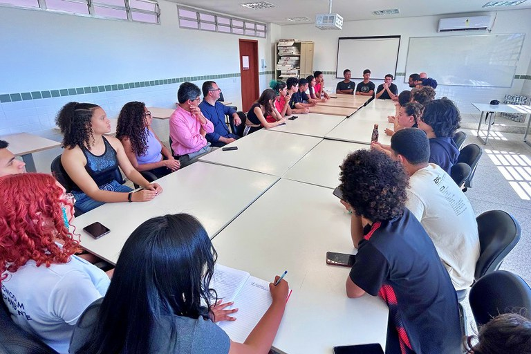

CAPÍTULO 4
Incidência da Gestão Democrática na Produção Documental: O que é? Como deve ser?

E nós estamos ainda no processo de aprender como fazer democracia. E a luta por ela passa pela luta contra todo tipo de autoritarismo
(Freire, A educação na cidade)
Ao retomarmos o tema da gestão democrática em EPT, é importante ressaltarmos que o objetivo deste capítulo é refletir sobre a relevância “dos documentos institucionais serem expressão da vontade coletiva e orientadores do projeto político-pedagógico da instituição de Educação Profissional e Tecnológica” (Brasil, 2024, p. 49), pois cada decisão e cada curso ou ação criada pela comunidade escolar precisam estar amparadas num movimento democrático de concepção e execução documental. Boas bases teóricas, legais e conceituais garantem boas escolhas em momentos de dificuldade, conflitos e dissensos. Quando os documentos institucionais são bem construídos, são eles que irão ser a luz para nortear o caminho e as decisões diante de uma situação de dúvida e dificuldade.
Devemos levar em conta que a gestão social precisa ser espaço representativo, a partir da ação dialógica e da participação ativa dos sujeitos sociais nos processos decisórios” (Brasil, 2024, p. 49) e destacar a “importância das instâncias representativas e colegiadas para a construção e consolidação do projeto político-pedagógico” (Brasil, 2024, p. 48) como resultado de uma decisão ampla e participativa para superar o ensino hegemônico e dual (Gramsci, 2000; 2001; 2002; 2004). Sabemos das demandas específicas e potentes das emergências do mundo de trabalho, mas nossa missão é dialogar e superar o operacional e específico e fomentar ações e prioridades de ordem estratégica e reflexiva.
Quando os documentos institucionais são construídos de forma dialogada, carregam poder de transformação capaz de suportar os grandes desafios inerentes a qualquer processo formativo. Como numa constituição bem-feita, que, diante de qualquer dúvida ou demanda individual ou coletiva, pode ser usada como forma de solucionar e dirimir eventuais desentendimentos. Na dúvida, a lei. Na inquietação, a regra.
Título: O cotidiano e os profissionais da EPT
Fonte: Gaia Schüler (2023a).
O cotidiano de uma instituição de EPT é perpassado pela experiência de vida de quem faz parte da instituição. Qualquer turma de sala de aula ou grupo de servidores públicos carrega em suas relações o espelhamento da sociedade. Neste sentido, os dissensos, as visões diferentes e as expectativas diversas e pluriversais precisam ser e estar alinhadas com o propósito de nossa missão institucional. Por isso, o cuidado na produção documental e a metodologia utilizada em todos os segmentos e fluxos poderão dar uma garantia de transparência e tranquilidade na hora da tomada de decisões. Documentos institucionais democraticamente bem construídos são, em grande parte, a garantia de encaminhamentos decisórios proativos, críticos e criativos.
Assim, a produção documental e a sua respectiva gestão refletem muito o que pensamos e realizamos em nossas instituições. Cada curso criado, cada normativa produzida, cada planejamento institucional, todos eles devem ser construídos de modo participativo e divulgados de forma ampla e irrestrita. Quando um documento não é produzido coletivamente, com o assentimento e o consentimento coletivo, ele tende a ser muito mais estratégia de controle das pessoas do que um bom encaminhamento dos fluxos necessários para cumprimento da atividade-fim.
Como estudamos nos capítulo anteriores, não é incomum que a gestão das instituições de ensino sejam cooptadas por visões gerencialistas que confundem meios e fins e reduzem a necessidade de investimento em educação. Essas visões partem de uma ideia distorcida de eficiência e eficácia, e tendem a considerar que a educação é produto e despesa – não um investimento (Machado, 2024). Partindo da noção de trabalho como princípio educativo e da pesquisa como pressuposto pedagógico, o critério de avaliação de uma proposta ético-política dos resultados finais destes processos não pode ser reduzido ao quantitativo e a planilhas com fórmulas e uma noção de eficiência e eficácia proveniente de processo fabril (Gramsci, 2000; 2001; 2002; 2004).
Mesmo em EPT, há muitas plataformas que imprimem certo grau e necessidade de comprovação de eficiência e eficácia dos investimentos públicos (Plataforma Nilo Peçanha, por exemplo). Entretanto, o que esse gerencialismo taylorista não considera é o valor imensurável da aprendizagem como transformação de si e dos diversos contextos nos diferentes níveis e modalidades de ensino.

Título: Gestão, responsabilidade e participação
Fonte: IFF (2023).
Conforme estudamos ao longo desta unidade, a gestão é, numa primeira acepção, a racionalização dos processos para a eficiência, mas não apenas dentro da lógica taylorista. Eficiência, neste caso, tem a ver com a garantia de que os direitos fundamentais sejam de fato considerados, respeitados e promovidos. Gestão é muito mais atitude de estímulo à responsabilidade e à participação – e, no caso especial da EPT, de incentivo à autonomia dos envolvidos –, do que propriamente o exercício de processos ou a metodologia de processos. Como bem nos orienta Machado (2024), o processo de redução da educação aos procedimentos das fábricas não apenas deixa de atender o propósito de viés qualitativo da e na educação, mas produz gradativa alienação e estranhamento, visto que temos que responder questões de ordem imensurável com a lupa do positivismo.
Cabe lembrar que a administração científica é importante como olhar racional sobre os processos que constituímos, mas, como não somos empresas e não produzimos coisas, nosso entendimento sobre metas, objetivos e finalidades não pode ser reduzido aos moldes fabris. A alienação e o estranhamento se dão, em certa medida, pela instrumentalização de processos que confundem a gestão da EPT como se fosse a mesma coisa que gerir uma olaria ou uma fábrica de sapatos. O gerencialismo, sobretudo presente no fordismo, taylorismo e toyotismo, tem como marca registrada que os processos e os resultados econômicos destes são mais importantes que as pessoas. Nessa lógica, o trabalho humano possui a mera finalidade de produzir dividendos aos donos do capital ou de produzir riquezas para a nação aos moldes de Adam Smith, isto é, mesmo que o trabalhador não tenha acesso aos benefícios e resultados de seu próprio esforço.
Isso posto para destacar que os documentos institucionais, como resultado de um processo de construção, revelam, em suas configurações e definições escritas, o grau de democracia na gestão. Na sequência, iremos examinar alguns aspectos que devem ser pressupostos na elaboração documental, considerando que, ainda que a gestão em exercício tenha certas prerrogativas no campus legislador dos regramentos, em geral, as unidades da Rede Federal, por exemplo, não podem legislar sobre aquilo que já está estabelecido. Ao contrário, sua função é aplicar os regramentos provenientes da União via respectivos ministérios. Esse é um ponto de partida importante: a elaboração de documentos, quer seja de regramento funcional dos servidores, quer de diretrizes de cursos precisa estar alinhada ao ditame legal e ao regramento disposto para tal.
Outro aspecto é que a elaboração dos documentos institucionais não pode se desviar de sua finalidade, ou seja, do sentido e papel da atividade-fim. Embora uma gestão de unidade ou de reitoria possua grande força para estabelecer o modo e a direção das propostas documentais, é a representatividade das categorias e serviços que será a moderadora para que os documentos cumpram efetivamente o seu papel institucional e não sejam apenas a expressão da vontade da equipe de gestão em exercício.